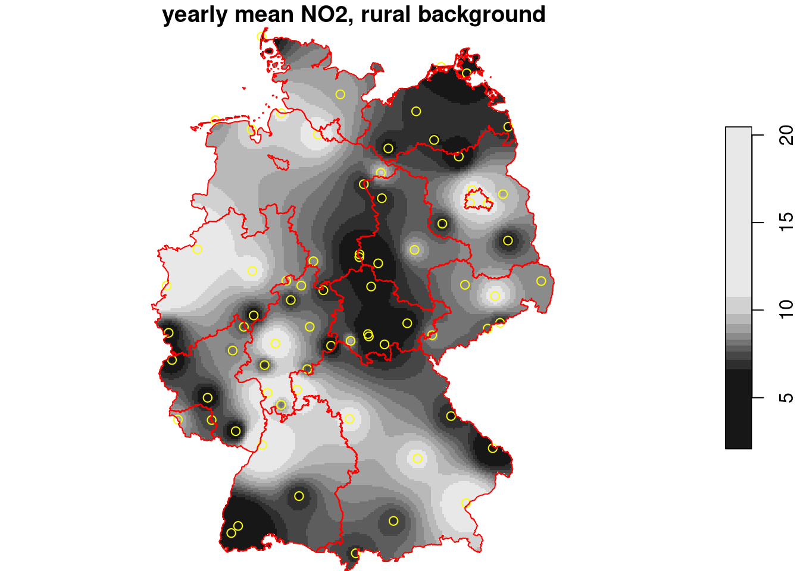

Chapter 13: Multivariate and Spatiotemporal Geostatistics
Exercises for Today
Exercises of Ch 12: Spatial interpolation
Summary
Intro to gstat
Geostatistical data
Spatial correlation, variograms, stationarity
Kriging
Simulating geostatistical data
Spatiotemporal geostatistics
3.1gstat
R package gstat was written in 2002/3, from a stand-alone C program that was released under the GPL in 1997. It implements “basic” geostatistical functions for modelling spatial dependence (variograms), kriging interpolation and conditional simulation. It can be used for multivariable kriging (cokriging), as well as for spatiotemporal variography and kriging. Recent updates included support for sf and stars objects.
3.2 What are geostatistical data?
Recall from day 1: locations + measured values
The value of interest is measured at a set of sample locations
At other location, this value exists but is missing
The interest is in estimating (predicting) this missing value (interpolation)
The actual sample locations are not of (primary) interest, the signal is in the measured values
library(sf)# Linking to GEOS 3.12.1, GDAL 3.8.3, PROJ 9.3.1; sf_use_s2() is TRUEno2<-read.csv(system.file("external/no2.csv", package ="gstat"))crs<-st_crs("EPSG:32632")# a csv doesn't carry a CRS!st_as_sf(no2, crs ="OGC:CRS84", coords =c("station_longitude_deg", "station_latitude_deg"))|>st_transform(crs)->no2.sflibrary(ggplot2)# plot(st_geometry(no2.sf))"https://github.com/edzer/sdsr/raw/main/data/de_nuts1.gpkg"|>read_sf()|>st_transform(crs)->deggplot()+geom_sf(data =de)+geom_sf(data =no2.sf, mapping =aes(col =NO2))
3.3 Spatial correlation
Lagged scatterplots
“by hand”, base R:
(w=st_is_within_distance(no2.sf, no2.sf, units::set_units(50, km), retain_unique =TRUE))# Sparse geometry binary predicate list of length 74, where# the predicate was `is_within_distance', with retain_unique =# TRUE# first 10 elements:# 1: (empty)# 2: (empty)# 3: 4, 5, 26# 4: 5, 26# 5: (empty)# 6: 30, 72# 7: (empty)# 8: (empty)# 9: (empty)# 10: (empty)d=as.data.frame(w)x=no2.sf$NO2[d$row.id]y=no2.sf$NO2[d$col.id]cor(x, y)# [1] 0.296plot(x, y, main ="lagged scatterplot")abline(0, 1)
When we assume \(Z(s)\) has a constant and unknown mean, the spatial dependence can be described by the variogram, defined as \(\gamma(h)
= 0.5 E(Z(s)-Z(s+h))^2\). If the random process \(Z(s)\) has a finite variance, then the variogram is related to the covariance function \(C(h)\) by \(\gamma(h) = C(0)-C(h)\).
The variogram can be estimated from sample data by averaging squared differences: \[\hat{\gamma}(\tilde{h})=\frac{1}{2N_h}\sum_{i=1}^{N_h}(Z(s_i)-Z(s_i+h))^2 \ \
h \in \tilde{h}\]
divide by \(2N_h\):
if finite, \(\gamma(\infty)=\sigma^2=C(0)\)
semi variance
if data are not gridded, group \(N_h\) pairs \(s_i,s_i+h\) for which \(h \in \tilde{h}\), \(\tilde{h}=[h_1,h_2]\)
rule-of-thumb: choose about 10-25 distance intervals \(\tilde{h}\), from length 0 to about on third of the area size
plot \(\gamma\) against \(\tilde{h}\) taken as the average value of all \(h \in \tilde{h}\)
We can compute a variogram “by hand”, using base R:
Compute the variogram of NO2 using argument cloud = TRUE.
how does the resulting object differ from the “regular” variogram
what do the “left” and “right” fields refer to?
when we plot the resulting object, does it still indicate spatial correlation?
3.4 Interpolation
For interpolation, we first need a target grid (point patterns have an observation window, geostatistical data not!)
A simple interpolator (that is hard to beat) is the inverse distance interpolator, \[\hat{Z}(s_0) = \sum_{j=1}^n \lambda_j Z(s_i)\] with \(\lambda_j\) proportional to \(||s_i - s_0||^{-p}\) and normalized to sum to one (weighted mean), and \(p\) tunable but defaulting to 2.
And crop to (mask out outside) the area of interest:
g3=st_crop(g2, de)i=idw(NO2~1, no2.sf, g3)# [inverse distance weighted interpolation]plot(i, reset =FALSE, main ="yearly mean NO2, rural background")plot(st_geometry(no2.sf), add =TRUE, col ='yellow')plot(st_cast(st_geometry(de), "MULTILINESTRING"), add =TRUE, col ='red')

Geostatistical approaches compute weights based on covariances between observations \(Z(s_i)\), and between observations and the value at the interpolation location \(Z(s_0)\). These covariances are obtained from a model fitted to the sample variogram.
3.5 Fit a variogram model
# The sample variogram:v=variogram(NO2~1, no2.sf)plot(v)
Given this model, we can interpolate using the best unbiased linear predictor (BLUP), also called kriging predictor. Under the model \(Z(s)=m+e(s)\) it estimates \(m\) using generalized least squares, and predicts \(e(s)\) using a weighted mean, where weights are chosen such that \(Var(Z(s_0)-\hat{Z}(s_0))\) is minimized.
Under the model \(Z(s) = X(s)\beta + e(s)\), \(\beta\) is estimated using generalized least squares, and the variogram of regression residuals is needed; see Ch 12.
Pebesma, E.J., 2004. Multivariable geostatistics in S: the gstat package. Computers & Geosciences, 30: 683-691.
Benedikt Gräler, Edzer Pebesma and Gerard Heuvelink, 2016. Spatio-Temporal Interpolation using gstat. The R Journal 8(1), 204-218
Source Code
## Geostatistical data### Learning goals* Get familiar with geostatistical data and spatial interpolation* Get familiar with concepts of geostatistics: stationarity, variogram, kriging, conditional simulation* Get an idea what spatiotemporal geostatistics is about### Reading materialsFrom [Spatial Data Science: with applications in R](https://r-spatial.org/book/): * Chapter 12: Spatial Interpolation* Chapter 13: Multivariate and Spatiotemporal Geostatistics### Exercises for Today* Exercises of Ch 12: Spatial interpolation::: {.callout-tip title="Summary"}* Intro to `gstat`* Geostatistical data* Spatial correlation, variograms, stationarity* Kriging* Simulating geostatistical data* Spatiotemporal geostatistics:::## `gstat`R package `gstat` was written in 2002/3, from a stand-alone Cprogram that was released under the GPL in 1997. It implements"basic" geostatistical functions for modelling spatial dependence(variograms), kriging interpolation and conditional simulation.It can be used for multivariable kriging (cokriging), as well asfor spatiotemporal variography and kriging. Recent updates includedsupport for `sf` and `stars` objects.## What are geostatistical data?Recall from day 1: locations + measured values* The value of interest is measured at a set of sample locations* At other location, this value exists but is _missing_* The interest is in estimating (predicting) this missing value (interpolation)* The actual sample locations are not of (primary) interest, the signal is in the measured values```{r}library(sf)no2 <-read.csv(system.file("external/no2.csv",package ="gstat"))crs <-st_crs("EPSG:32632") # a csv doesn't carry a CRS!st_as_sf(no2, crs ="OGC:CRS84", coords =c("station_longitude_deg", "station_latitude_deg")) |>st_transform(crs) -> no2.sflibrary(ggplot2)# plot(st_geometry(no2.sf))"https://github.com/edzer/sdsr/raw/main/data/de_nuts1.gpkg"|>read_sf() |>st_transform(crs) -> deggplot() +geom_sf(data = de) +geom_sf(data = no2.sf, mapping =aes(col = NO2))```## Spatial correlation### Lagged scatterplots"by hand", base R:```{r}(w =st_is_within_distance(no2.sf, no2.sf, units::set_units(50, km), retain_unique =TRUE))d =as.data.frame(w)x = no2.sf$NO2[d$row.id]y = no2.sf$NO2[d$col.id]cor(x, y)plot(x, y, main ="lagged scatterplot")abline(0, 1)```using gstat:```{r}library(gstat)hscat(NO2~1, no2.sf, breaks =c(0,50,100,150,200,250)*1000)```### VariogramWhen we assume $Z(s)$ has a constant and unknown mean, the spatialdependence can be described by the variogram, defined as $\gamma(h)= 0.5 E(Z(s)-Z(s+h))^2$. If the random process $Z(s)$ has a finitevariance, then the variogram is related to the covariance function$C(h)$ by $\gamma(h) = C(0)-C(h)$.The variogram can be estimated from sample data by averaging squared differences:$$\hat{\gamma}(\tilde{h})=\frac{1}{2N_h}\sum_{i=1}^{N_h}(Z(s_i)-Z(s_i+h))^2 \ \h \in \tilde{h}$$* divide by $2N_h$: * if finite, $\gamma(\infty)=\sigma^2=C(0)$ * _semi_ variance* if data are not gridded, group $N_h$ pairs $s_i,s_i+h$ for which $h \in \tilde{h}$, $\tilde{h}=[h_1,h_2]$* rule-of-thumb: choose about 10-25 distance intervals $\tilde{h}$, from length 0 to about on third of the area size* plot $\gamma$ against $\tilde{h}$ taken as the average value of all $h \in \tilde{h}$We can compute a variogram "by hand", using base R:```{r}z = no2.sf$NO2z2 =0.5*outer(z, z, FUN ="-")^2# (Z(s)-Z(s+h))^2d =as.matrix(st_distance(no2.sf)) # hvcloud =data.frame(dist =as.vector(d), gamma =as.vector(z2))vcloud = vcloud[vcloud$dist !=0,]vcloud$dclass =cut(vcloud$dist, c(0, 50, 100, 150, 200, 250, 300, 350) *1000)v =aggregate(gamma~dclass, vcloud, mean)plot(gamma ~ dclass, v, ylim =c(0, 20))```using gstat:```{r}vv =variogram(NO2~1, no2.sf, width =50000, cutoff =350000)vv$gamma - v$gammaplot(vv)```::: {.callout-note title="Breakout session 1"}Compute the variogram of NO2 using argument `cloud = TRUE`. * how does the resulting object differ from the "regular" variogram * what do the "left" and "right" fields refer to?* when we plot the resulting object, does it still indicate spatial correlation?:::## InterpolationFor interpolation, we first need a target grid (point patterns havean observation window, geostatistical data not!)A simple interpolator (that is hard to beat) is the inverse distance interpolator,$$\hat{Z}(s_0) = \sum_{j=1}^n \lambda_j Z(s_i)$$with $\lambda_j$ proportional to $||s_i - s_0||^{-p}$ and normalized to sumto one (weighted mean), and $p$ tunable but defaulting to 2.Using the data range:```{r}library(stars)g1 =st_as_stars(st_bbox(no2.sf))library(gstat)idw(NO2~1, no2.sf, g1) |>plot(reset =FALSE)plot(st_geometry(no2.sf), add =TRUE, col ='yellow')plot(st_cast(st_geometry(de), "MULTILINESTRING"), add =TRUE, col ='red')```Better to use the outer polygon:```{r}g2 =st_as_stars(st_bbox(de))idw(NO2~1, no2.sf, g2) |>plot(reset =FALSE)plot(st_geometry(no2.sf), add =TRUE, col ='yellow')plot(st_cast(st_geometry(de), "MULTILINESTRING"), add =TRUE, col ='red')```And crop to (mask out outside) the area of interest:```{r}g3 =st_crop(g2, de)i =idw(NO2~1, no2.sf, g3) plot(i, reset =FALSE, main ="yearly mean NO2, rural background")plot(st_geometry(no2.sf), add =TRUE, col ='yellow')plot(st_cast(st_geometry(de), "MULTILINESTRING"), add =TRUE, col ='red')```Geostatistical approaches compute weights based on covariancesbetween observations $Z(s_i)$, and between observations and thevalue at the interpolation location $Z(s_0)$. These covariancesare obtained from a model fitted to the sample variogram.## Fit a variogram model```{r}# The sample variogram:v =variogram(NO2~1, no2.sf)plot(v)```fit a model, e.g. an exponential model:```{r}v.fit =fit.variogram(v, vgm(1, "Exp", 50000))plot(v, v.fit)```## BLUP/KrigingGiven this model, we can interpolate using the _best unbiased linearpredictor_ (BLUP), also called kriging predictor. Under the model$Z(s)=m+e(s)$ it estimates $m$ using generalized least squares, andpredicts $e(s)$ using a weighted mean, where weights are chosen suchthat $Var(Z(s_0)-\hat{Z}(s_0))$ is minimized. ```{r}k =krige(NO2~1, no2.sf, g3, v.fit)k$idw = i$var1.predk$kriging = k$var1.predhook =function() {plot(st_geometry(no2.sf), add =TRUE, col ='yellow')plot(st_cast(st_geometry(de), "MULTILINESTRING"), add =TRUE, col ='red')}plot(merge(k[c("kriging", "idw")]), hook = hook, breaks ="equal")```::: {.callout-important}## Density or interpolation?Both density maps shown in the Point Pattern section and interpolatedmaps shown in this section look very similar:* raster maps with continuous values* smooth spatial patternsThe differences could not be larger!* point density estimates estimate the number of points per unit area; the values are (normalized) _counts_* interpolated maps estimate an unmeasured continuous variable; the values are weighted averages of an _attribute_:::To illustrate the difference between density and interpolated values:```{r echo=FALSE}#| code-fold: true#| out.width: '100%'library(spatstat)p = as.ppp(st_geometry(no2.sf), W = as.owin(st_union(st_geometry(de))))density(p) |> st_as_stars() |> plot(main = "station density (# m^-2)", reset = FALSE)plot(st_geometry(no2.sf), add = TRUE, col = 'yellow')``````{r echo=FALSE}#| code-fold: true#| out.width: '100%'plot(i, main = "interpolation: NO2 (ppm)", reset = FALSE)plot(st_geometry(no2.sf), add = TRUE, col = 'yellow')```## Kriging with a non-constant meanUnder the model $Z(s) = X(s)\beta + e(s)$, $\beta$ is estimatedusing generalized least squares, and the variogram of regressionresiduals is needed; see Ch 12.## Conditional simulation### Simulating spatially correlated dataUsing a coarse grid, with base R:```{r}set.seed(13579)g2c =st_as_stars(st_bbox(de), dx =15000)g3c =st_crop(g2c, de)p =st_as_sf(g3c, as_points =TRUE)d =st_distance(p)Sigma =variogramLine(v.fit, covariance =TRUE, dist_vector = d)n =100ch =chol(Sigma)sim =matrix(rnorm(n *nrow(ch)), nrow = n) %*% ch +mean(no2.sf$NO2)for (i inseq_len(n)) { m = g3c[[1]] m[!is.na(m)] = sim[i,] g3c[[ paste0("sim", i) ]] = m}plot(merge(g3c[2:11]), breaks ="equal")```As a check, we could compute the variogram of some of the realisations:```{r}g3c["sim4"] |>st_as_sf() |>variogram(sim4~1, data = _) |>plot(model = v.fit)g3c["sim5"] |>st_as_sf() |>variogram(sim5~1, data = _) |>plot(model = v.fit, ylim =c(0,17.5))g3c["sim6"] |>st_as_sf() |>variogram(sim6~1, data = _) |>plot(model = v.fit, ylim =c(0,17.5))```The mean of these simulations is constant, not related to measured values:```{r}st_apply(merge(g3c[-1]), c("x", "y"), mean) |>plot()mean(no2.sf$NO2)```Conditioning simulations on measured values can be done with `gstat`, using_conditional simulation_```{r}cs =krige(NO2~1, no2.sf, g3, v.fit, nsim =50, nmax =30)plot(cs[,,,1:10])```We see that these simulations are much more alike; also theirmean and variance resemble that of the kriging mean and variance:```{r}csm =st_apply(cs, c("x", "y"), mean)csm$kriging =krige(NO2~1, no2.sf, g3, v.fit)[1]plot(merge(csm), breaks ="equal")csv =st_apply(cs, c("x", "y"), var)csv$kr_var =krige(NO2~1, no2.sf, g3, v.fit)[2]plot(merge(csv), breaks ="equal")```::: {.callout-note title="Breakout session 2"}What causes the differences between the mean and the varianceof the simulations (left) and the mean and variance obtainedby kriging (right)?:::## SpatioTemporal geostatistics* [Ch 13](https://r-spatial.org/book/13-Geostatistics.html)## Further reading* Pebesma, E.J., 2004. Multivariable geostatisticsin S: the gstat package. Computers & Geosciences, 30:[683-691](https://doi.org/10.1016/j.cageo.2004.03.012).* Benedikt Gräler, Edzer Pebesma and Gerard Heuvelink, 2016.Spatio-Temporal Interpolation using gstat. The R Journal 8(1),[204-218](https://journal.r-project.org/archive/2016/RJ-2016-014/index.html)